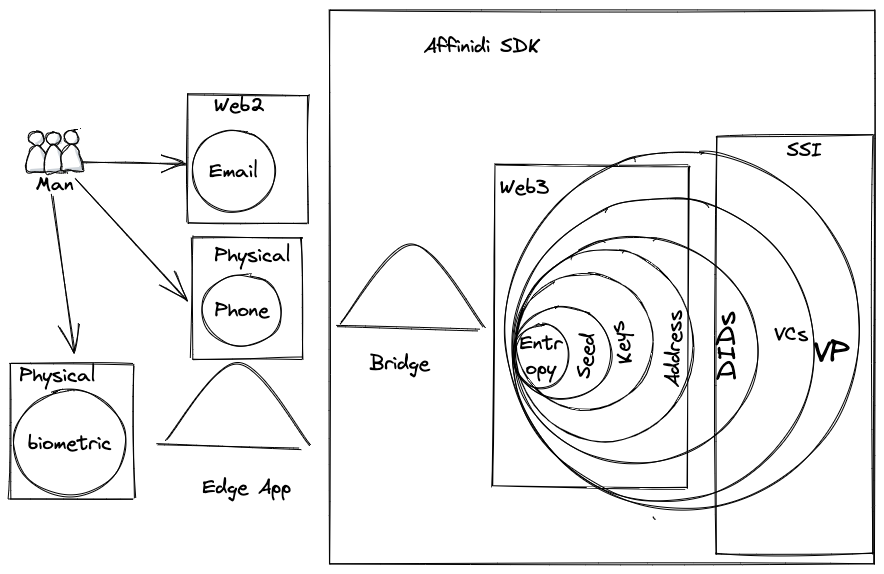

Welcome to Self Sovereign Identity with Affinidi SDK#
I assume that you already know some basics of SSI if not we will discover few key ideas in this book and videos. This book is just compilation of ipython notebooks that could be independently run for every topic. Each character has a youtube videos that explain a topic it self and hands on code based on affinidi sdk.
Why SSI and web5#
User centric decentralized world or democratized and unlocked data
Allow to create privacy preserving applications
Allow to create holistic identity metasystem
SSI Principles#
For identity systems and safe internet#
 In 2005, Microsoft's Chief Identity Architect, Kim Cameron wrote an influential paper called [The Laws of Identity](https://www.identityblog.com/stories/2005/05/13/TheLawsOfIdentity.pdf) (PDF). Kim had been talking about and formulating these laws in 2004 and throughout 2005. It's no coincidence that Internet Identity Workshop got started in 2005. Many people were talking about user-centric identity and developing ideas about how we might be able to create an identity layer for the Internet. Fifteen years later, we're still at it, but getting closer and closer all the time. (c)[laws of identity www.windley.com](https://www.windley.com/archives/2019/01/the_laws_of_identity.shtml) is iconic paper that explain it in details . ### For Data unlocking and OwnershipAffinidi SDK#
Affinidi SDK offer multiple capabilities and features for self sovereign identity management
 Code could be found in a repo Affinidi SDK repo
Code could be found in a repo Affinidi SDK repo
We build a bridges from web2 to web3 that allow to migrate from centralized web2 world to web5 and web3 future.  Lets try to connect all dots together
What about Web 5 ?#
Some times you will meet term web5 - it is alternative name for SSI based systems.